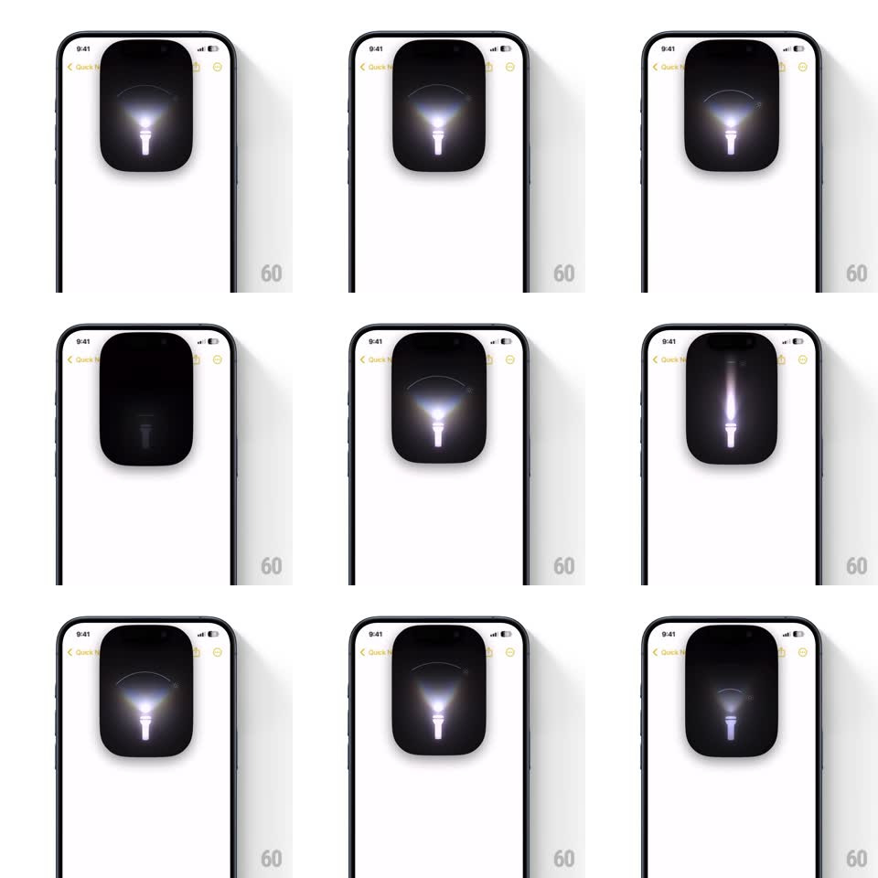

Media
Frame-by-frame

Rebuild this interaction 1:1: iOS 18's flashlight control in the Dynamic Island - tapping the torch expands the island into a tall black panel showing a glowing flashlight with its beam cone, and dragging vertically adjusts brightness while dragging horizontally widens or narrows the beam, with the glow and cone updating fluidly.

Rebuild this interaction 1:1: iOS 18's flashlight control in the Dynamic Island - tapping the torch expands the island into a tall black panel showing a glowing flashlight with its beam cone, and dragging vertically adjusts brightness while dragging horizontally widens or narrows the beam, with the glow and cone updating fluidly. ## Integration Integration: stack-agnostic spec - springs given as stiffness/damping, timed motions as duration + curve; map every value to your framework and animation library of choice. ## Scene Any app screen (here: Notes) with the Dynamic Island. Expanded state: a tall rounded black panel fills the top of the screen, containing a white flashlight glyph whose head emits a gradient glow and whose beam is a translucent cone above it, plus a thin arc at the top showing the beam spread. ## Motion spec Pattern: Dynamic Island expansion with two-axis fluid control. - Tap torch: the island stretches downward into the panel (spring ~340/26, ~400ms, slight overshoot), content fading in as it grows. - Vertical drag: brightness - the glow intensity and cone opacity track the finger 1:1 across 4 levels; level changes land with a soft haptic-timed pulse (glow pops ~10% for 120ms). - Horizontal drag: beam width - the cone splays from a narrow spotlight (~15deg) to a wide flood (~50deg), the top arc stretching to match, tracking 1:1. - The flashlight glyph stays fixed at the panel's vertical center; only glow and cone reshape. - Tap outside or swipe up: panel springs back to the island (350ms). ## Calibration - Both axes work from anywhere inside the panel, simultaneously - no mode switch. - The beam's edge stays soft (gradient), never a hard line. ## Reduced motion Panel fades between compact/expanded (200ms); drags still track 1:1. ## Don't miss - The panel is pure black on any wallpaper - it reads as hardware, not UI chrome. - At minimum brightness the glow never fully dies while the torch is on.